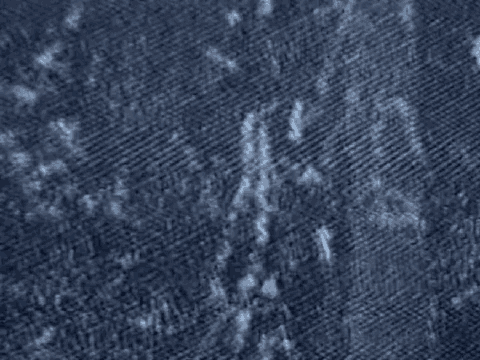

13 THE FOREPERSON: Guilty, himself killed.
14 THE CLERK: Count 43, Geoffrey Mulu Kalio, how do you
15 find as to the defendant Odeh?
16 THE FOREPERSON: Guilty.
17 THE CLERK: As to the defendant Al-'Owhali?
18 THE FOREPERSON: Guilty, himself killed.
19 THE CLERK: Count 44, Joel Gitumbo Kamau, how do you
20 find as to the defendant Odeh?
21 THE FOREPERSON: Guilty.
22 THE CLERK: As to the defendant Al-'Owhali?
23 THE FOREPERSON: Guilty, himself killed.
24 THE CLERK: Count 45, Francis Kihara Kamiti, how do
25 you find as to the defendant Odeh?
6579
1 THE FOREPERSON: Guilty.
2 THE CLERK: As to the defendant Al-'Owhali?
3 THE FOREPERSON: Guilty, himself killed.
4 THE CLERK: Count 46, Lawrence Gitau Kamuti, how do
5 you find as to the defendant Odeh?
6 THE FOREPERSON: Guilty.
7 THE CLERK: As to the defendant Al-'Owhali?
8 THE FOREPERSON: Guilty, himself killed.
9 THE CLERK: Count 47, Margaret Wanjiru Kangi, how do
10 you find as to the defendant Odeh?
11 THE FOREPERSON: Guilty.
12 THE CLERK: As to the defendant Al-'Owhali?
13 THE FOREPERSON: Guilty, himself killed.
14 THE CLERK: Count 48, Rachel Wambui Karaba, how do
15 you find as to the defendant Odeh?
16 THE FOREPERSON: Guilty.
17 THE CLERK: As to the defendant Al-'Owhali?
18 THE FOREPERSON: Guilty, himself killed.
19 THE CLERK: Count 49, Charles Mugo Karanja, how do
20 you find as to the defendant Odeh?
21 THE FOREPERSON: Guilty.
22 THE CLERK: As to the defendant Al-'Owhali?
23 THE FOREPERSON: Guilty, himself killed.
24 THE CLERK: Count 50, Lucy Nyamira Karigi, how do you
25 find as to the defendant Odeh?
6580
1 THE FOREPERSON: Guilty.
2 THE CLERK: As to the defendant Al-'Owhali?
3 THE FOREPERSON: Guilty, himself killed.
4 THE CLERK: Beatrice Nyambura Kariuki, how do you
5 find as to the defendant Odeh?
6 THE FOREPERSON: Guilty.
7 THE CLERK: As to the defendant Al-'Owhali?
8 THE FOREPERSON: Guilty, himself killed.
9 THE CLERK: Count 52, Moses Kariuki, how do you find
10 as to the defendant Odeh?
11 THE FOREPERSON: Guilty.
12 THE CLERK: As to the defendant Al-'Owhali?
13 THE FOREPERSON: Guilty, himself killed.
14 THE CLERK: Count 53, Kristine Anne Wairimu Karumba,
15 how do you find as to the defendant Odeh?
16 THE FOREPERSON: Guilty.
17 THE CLERK: As to the defendant Al-'Owhali?
18 THE FOREPERSON: Guilty, himself killed.
19 THE CLERK: Count 54, Prabhi Gutpara Kavaler, as to
20 defendant Odeh?
21 THE FOREPERSON: Guilty.
22 THE CLERK: As to defendant Al-'Owhali?
23 THE FOREPERSON: Guilty, himself killed.
24 THE CLERK: Count 55, Thomas Mudanyi Khahenzi, how do
25 you find as to defendant Odeh?
6581
1 THE FOREPERSON: Guilty.
2 THE CLERK: As to defendant Al-'Owhali?
3 THE FOREPERSON: Guilty, himself killed.
1